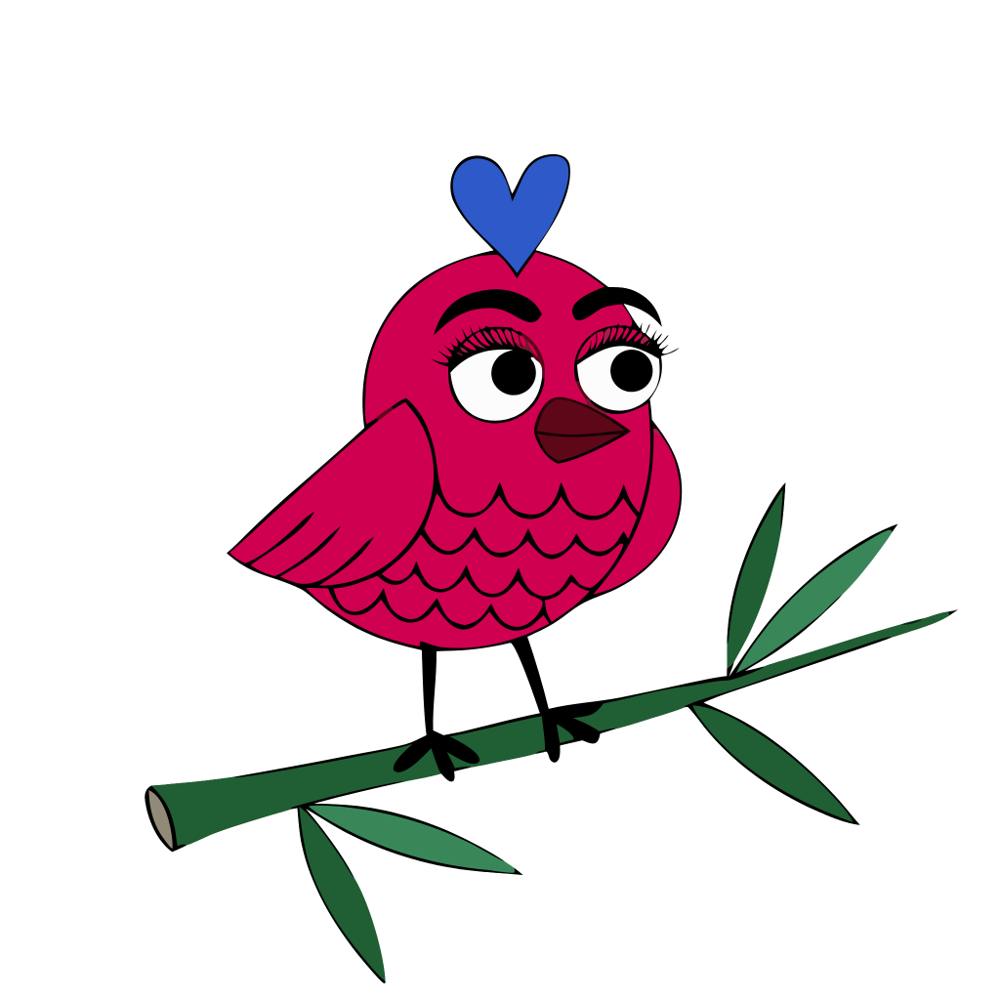
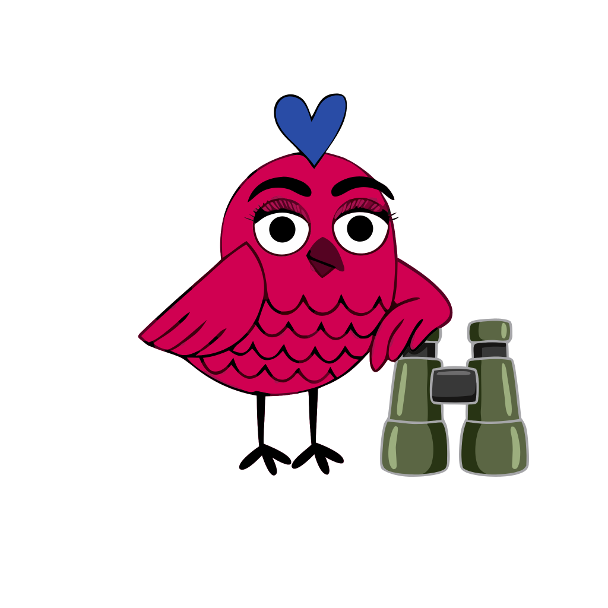
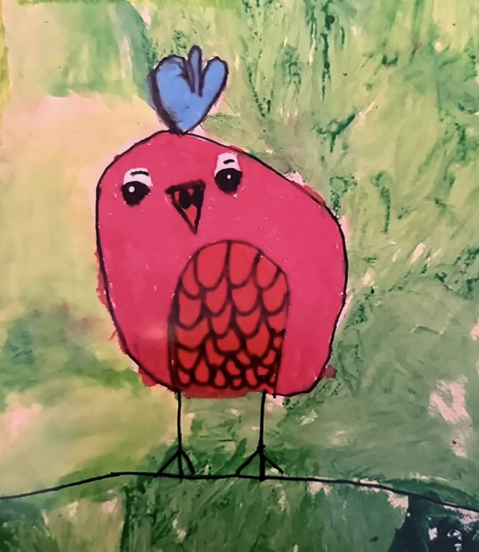

Pink Bird Mahj: Card Coach plays American Mahjong with you and grades the judgments you make — when to call, when to pass, when a hand is dead and which way to pivot. It keeps track of the ones you keep missing, and gives you the practice session that fixes them. You bring your own National Mah Jongg League card; this teaches you to read it.

Most American Mahjong apps are either a place to play or a course to sit through. A place to play never tells you why you lost. A course teaches everybody the same thing in the same order, whether or not it is the thing you are actually bad at. Both leave the same gap: the player who can already play, has plateaued, and wants to win more often.
Card Coach is built for that player, and it works the way a good teacher at your table would. It plays hands with you. It watches the decisions you make and keeps a quiet record of how they turn out — not a score, a pattern. When the same mistake shows up more than once, it names the mistake in plain English and hands you the one drill that trains it.
That is the difference worth the download. Not that there are drills — anyone can write drills. That the app knows which one you need. And because it teaches the patterns underneath the hands rather than this year's hands by rote, the skill carries forward when a new card arrives each April.
Coach Starling is the part of the app that pays attention. She grades your judgments as they happen, keeps a running picture of each skill separately — calling, jokers, dead hands, the Charleston, defense — and waits until a weakness is real before she says anything. One unlucky hand is not a weakness, and a coach who talks constantly becomes wallpaper.

“You take an exposure the moment it appears. Twice this session, that told the table where you were going before you needed them to know. Joker Moves drills that timing.” One thing at a time, in plain English, with somewhere to go about it.
The drills are what the coach prescribes. Each one isolates a single judgment and makes you practice it against real board positions — so a diagnosis always comes with a fix, and you can also just work through them on your own.
Block vision — seeing that very different-looking hands share the same underlying shape.
The suit rule. Which groups must share a suit, which must differ, and why.
Call or pass? The joker economy, with the discipline traps that make it hard.
Knowing when your line is dead and which hand to switch to.
Hand selection — play a deal out, then replay the identical deal down the other road.
What are you waiting on? Three levels, ending in a live table read.
Given thirteen tiles, name the directions worth committing to.
At the table: point your camera at your real rack and check it against your card, mid-game.
Card Coach is in testing now on iPhone and Android, and we are looking for American Mahjong players to break it. If you play — at a club, in a league, or around a kitchen table on Wednesdays — you are exactly who this was built for.
Tell us whether you are on iPhone or Android and we will send a TestFlight or Google Play invitation. No cost, and nothing to cancel.
An official National Mah Jongg League card is required to play, and must be purchased from the League, an authorized store, or a dealer. Card Coach works alongside your physical card — it never displays or replaces it. The app points you back to the card, because reading it fluently is the skill being taught.
Status: Card Coach is in beta on iPhone and Android ahead of release. Join the beta, or write to info@pinkbirdmahj.com for release news.
Pink Bird Mahj LLC is an independent software company registered in Texas, United States. We build one thing: tools that make American Mahjong players better at the game.

My niece painted the bird years before any of this. It wasn't a mahjong picture, and it wasn't meant to be anything in particular. I have just always liked it. It hangs at my Mom's house. When I started playing Mahjong and this company happened, I found a way to use something she created. It isn't a particular kind of bird and it was never tidy, and that is exactly why I picked it. American Mahjong is a strategic game played around a table by people having a good time. A slightly lopsided pink bird felt closer to that than anything polished would have.
General enquiries: info@pinkbirdmahj.com